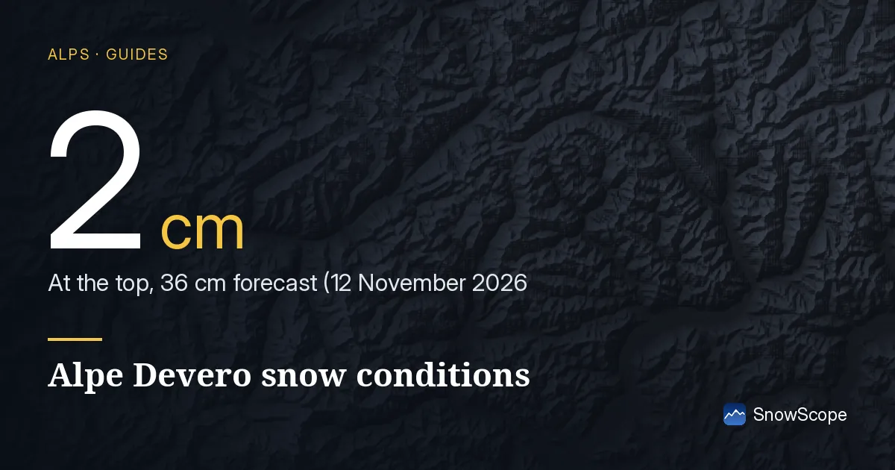
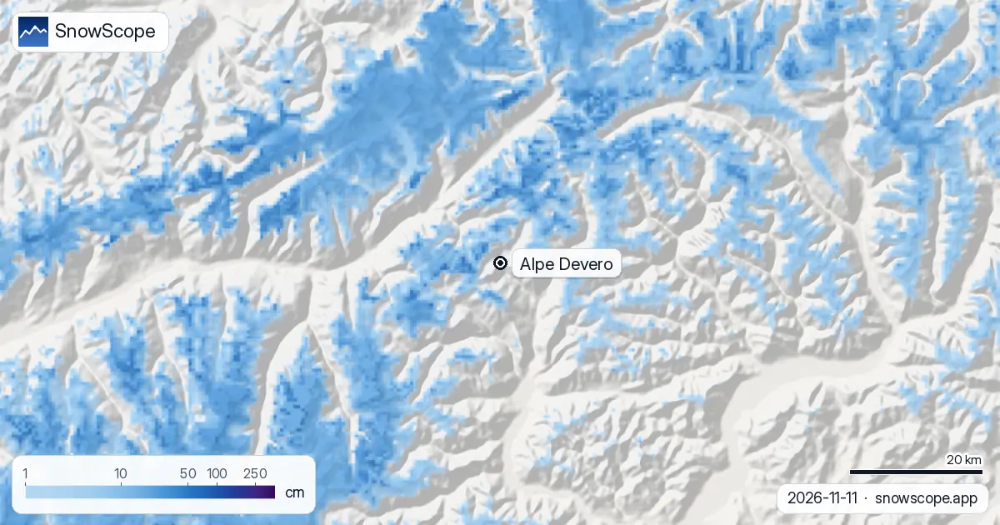

Alpe Devero snow conditions: 2 cm at the top, 36 cm forecast (12 November 2026)
Early season snow at Alpe Devero is scattered and melting fast. The mountain holds 2 cm at the summit (2201 m) and nothing at the base or mid-slopes, but the next seven days will add 36 cm at the top, 24 cm at mid-mountain and 21 cm at the base.
See the live snow forecast for Alpe Devero in the SnowScope appSnow depth, powder alerts and the 3D map, free.

What is here now
November began thin. In the first week, 3 cm fell at the base (1640 m), 8 cm at mid-mountain (1920 m) and 11 cm at the top. Most of that high snow arrived in the last two days before 12 November, but sun and wind have trimmed it to 2 cm at the peak.
The base and mid-mountain are bare. This is typical for early November in the Alps. The little that falls at lower heights sits on warm ground and vanishes within days.
The week ahead will change things
The forecast for the next seven days shows a real shift. Snow will add 21 cm at the base, 24 cm at mid-mountain and 36 cm at the top by 19 November. That is enough to cover the rocks at mid-mountain and to build a first layer of proper skiing at the highest elevations.
The timing matters: 8 cm will fall at the top in the next 24 hours alone (13–14 November), then another centimetre on 15 November. Most of the remaining snow comes later in the week.
November is usually thin here
Past winters show that November at Alpe Devero is a waiting month. The median depth by the end of November is only 7 cm at the base, 11 cm at mid-mountain and 17 cm at the top. Snow does arrive, but slowly and high up.
The first snow typically falls at the summit by 12 October, at mid-mountain by 1 November and at the base by 5 November. This year tracks close to that pattern. The last snow of the season, by contrast, often lingers at the top until around 27 June.
When the season builds
December thickens the cover to 21 cm at the base, 28 cm at mid-mountain and 40 cm at the top. The real accumulation begins in January and continues through April. March brings a typical 54 cm at the base and 69 cm at mid-mountain; April adds 92 cm at the summit.
In a middle winter across the past 46 seasons, the peak reaches 71 cm at the base, 87 cm at mid-mountain and 111 cm at the top. Last winter (2025–26) peaked lower: 62 cm, 78 cm and 102 cm. The trend over recent decades is toward less snow at the top: 122 cm in the first 15 winters of the record, down to 102 cm in the last 15.

Where reliable cover arrives
The mid-mountain elevation (1920 m) is the surest place to find skiable snow by late March. Week 13 (around 23–29 March) has 50 cm or more in 91 of 100 past winters, with a typical depth of 72 cm. The top (2201 m) is reliable for even longer: 13 weeks of the season hold 50 cm or more in 9 of 10 past winters.
The base at 1640 m is the slowest to accumulate and the fastest to thin. Even in a full winter, the peak there is usually 71 cm, and much of it comes late. By contrast, the summit peak of 111 cm can persist through April and May.
The resort and its setting
Alpe Devero is a small area: 5 km of mapped runs and 5 lifts. The real draw is the landscape. The mountain sits in a wide, car-free basin above the village of Baceno in the Ossola valley, with snowshoe trails across open slopes and ski touring on the ridges and spurs that border the alp.
The numbers above describe the lift area. Snow tours above the pistes hold depth longer, especially on north-facing terrain. The site's isolation—no vehicles in the basin itself—makes it a retreat for skiers and walkers seeking quiet winters.
Tips for skiers
- Wait for the forecast snow (21–36 cm by 19 November) before driving to Devero. Bare ground at the base now will slow a drive up from Baceno.
- Mid-mountain (1920 m) will reach skiable cover first. The base trails may need until December to settle properly.
- Once snow builds, check the AINEVA avalanche bulletin (bollettini.aineva.it) before snowshoeing or touring the open slopes around the alp.
- Confirm lift operations on the resort calendar before you travel. Early-season opening dates follow the resort's schedule, not the snow map.
- Early November snow on south-facing slopes melts quickly. North-facing terrain and the highest elevations will hold the first useable cover longest.
About these numbers
Resort snow depths are the deepest snow on the resort's upper slopes on the date shown; they are estimates for an area, not a measurement at one point. Forecasts can change. Always read the official avalanche bulletin before going off-piste.
Official avalanche bulletins: AINEVA – Associazione Interregionale Neve e Valanghe
Cite this report
For research, teaching or the press: the numbers and charts are free to reuse under CC BY 4.0 with this citation.
SnowScope (2026), Alpe Devero snow conditions: 2 cm at the top, 36 cm forecast (12 November 2026), https://snowscope.app/blog/en/2026/11/alpe-devero-snow-conditions-12-november-2026.html, accessed 2026-11-12
SnowScope (Atlas Labs). (2026, November 12). Alpe Devero snow conditions: 2 cm at the top, 36 cm forecast (12 November 2026). SnowScope snow reports. https://snowscope.app/blog/en/2026/11/alpe-devero-snow-conditions-12-november-2026.html
BibTeX
@misc{snowscope2026alpedeverosnowconditions,
author = {{SnowScope (Atlas Labs)}},
title = {Alpe Devero snow conditions: 2 cm at the top, 36 cm forecast (12 November 2026)},
year = {2026},
month = nov,
howpublished = {\url{https://snowscope.app/blog/en/2026/11/alpe-devero-snow-conditions-12-november-2026.html}},
note = {Published 2026-11-12 09:44 UTC; accessed 2026-11-12}
}· CC BY 4.0 · Methods, data and tools →
Alpe Devero: snow and temperature by height, this winter vs last (tools) →
Follow Alpe Devero
Free: a message when fresh snow is coming, and the forecast every morning.
More snow reports

Where December 2026 looks snowier or leaner across the Dolomites, from Val Gardena to Cortina: the European seasonal forecast, our map and the chances of a white Christmas.

Snow today in Cortina, the European seasonal forecast for December and our chances of a white Christmas, mountain by mountain in the eastern Dolomites.

Snow today at the Grands Montets, the European seasonal forecast for December and our map of where December looks snowier or leaner around Mont Blanc.